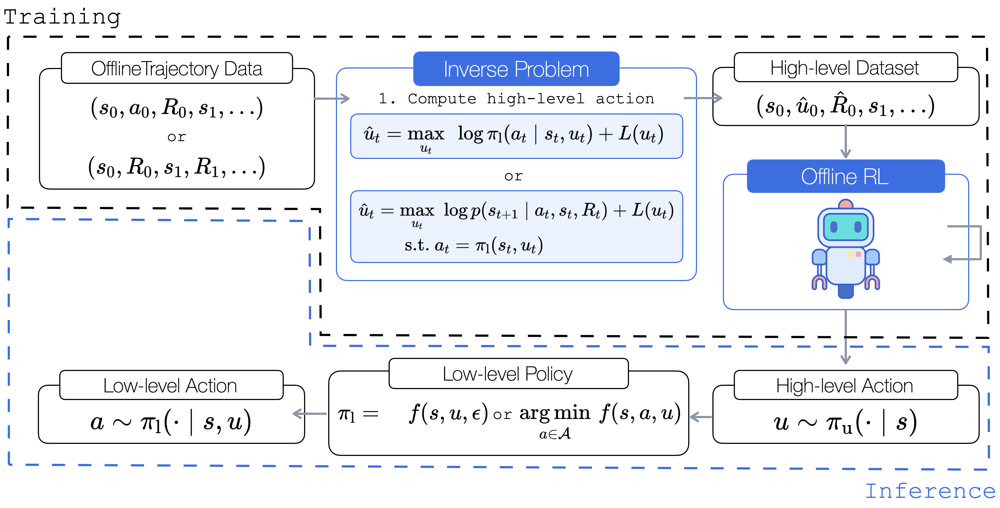

Abstract
Hierarchical policies enable strong performance in many sequential decision-making
problems, such as those with high-dimensional action spaces, those requiring longhorizon
planning, and settings with sparse rewards. However, learning hierarchical
policies from static offline datasets presents a significant challenge. Crucially, actions
taken by higher-level policies may not be directly observable within hierarchical controllers,
and the offline dataset might have been generated using a different policy
structure, hindering the use of standard offline learning algorithms.
In this work, we propose OHIO: a framework for offline reinforcement learning (RL) of hierarchical policies.
Our framework leverages knowledge of the policy structure to solve the inverse problem,
recovering the unobservable high-level actions that likely generated the observed data under
our hierarchical policy. This approach constructs a dataset suitable for off-the-shelf
offline training. We demonstrate our framework on robotic and network optimization
problems and show that it substantially outperforms end-to-end RL methods and improves
robustness. We investigate a variety of instantiations of our framework, both in
direct deployment of policies trained offline and when online fine-tuning is performed.
Motivation
Hierarchical policies perform control at different levels of abstraction, providing benefits such as:
- ✔️ Improving long-term planning
- ✔️ Enabling convenient state representations
- ✔️ Combining learning- and optimization-based control
Previous work often relies on costly online interaction, as offline learning within hierarchical formulations is limited by:
- üîµ Challenge 1: High-level action û may not be observable
- üîµ Challenge 2: Any modifications to the controller can yield ill-posed offline RL problems
Method

We propose OHIO, a framework to learn hierarchical behavior policies from offline data. By exploiting structural knowledge of the low-level policy, we solve an inverse problem (top center) to transform low-level trajectory data (top left) into a dataset amenable to offline RL (top right), regardless of the nature of the policy used for data collection. At inference time, the RL-trained policy provides inputs to the low-level policy (bottom).
Illustrative Example
If no analytic form exists, we solve numerically using:
- Sampling-based methods (e.g., Cross-Entropy Method)
- Gradient-based methods (e.g., Gradient Descent for differentiable policies)
- Data-driven inverse optimization (e.g., via strong duality for opt-based policiey)
Results
To demonstrate broad applicability of our framework, OHIO, is evaluated across different domains:
- Robotics scenarios, where the low-level policy is a traditional, non-learned controller (i.e., feedback controller)
- Real-world network optimization problems, in which the low-level policy is optimization-based (i.e., linear program)
✔️ OHIO successfully recovers hierarchical policies from non-hierarchical datasets
✔️ Analytical inverse is more susceptible to model error and model misspecifications
✔️ Selecting the observed next state as high-level action is ineffective

BibTeX
@inproceedings{
schmidt2025offline,
title={Offline Hierarchical Reinforcement Learning via Inverse Optimization},
author={Carolin Schmidt and Daniele Gammelli and James Harrison and Marco Pavone and Filipe Rodrigues},
booktitle={The Thirteenth International Conference on Learning Representations},
year={2025},
url={https://openreview.net/forum?id=dTPz4rEDok}}